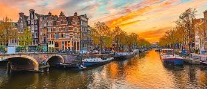

Amsterdam es la capital de los Países Bajos, conocida por su patrimonio artístico, su elaborado sistema de canales y sus casas angostas con fachadas de dos aguas, herencias de la Edad de Oro de la ciudad durante el siglo XVII. El Distrito de Museos alberga el Museo van Gogh, obras de Rembrandt y Vermeer en el Rijksmuseum, y arte moderno en el Museo Stedelijk. El ciclismo es clave en la identidad de la ciudad y existen varios senderos para practicarlo.